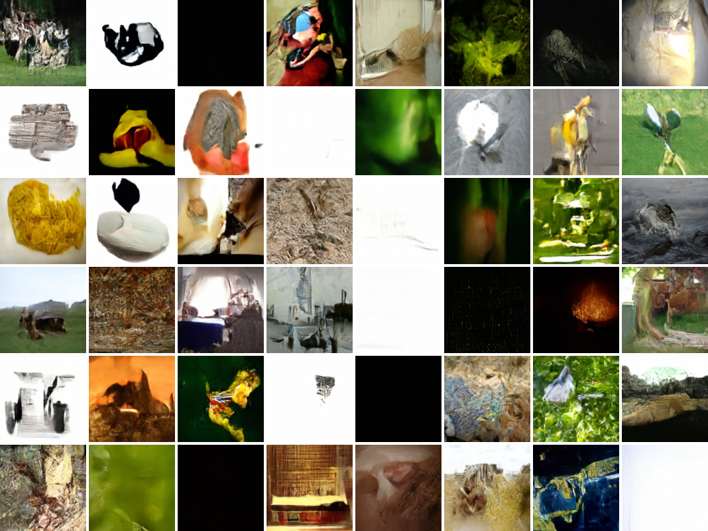
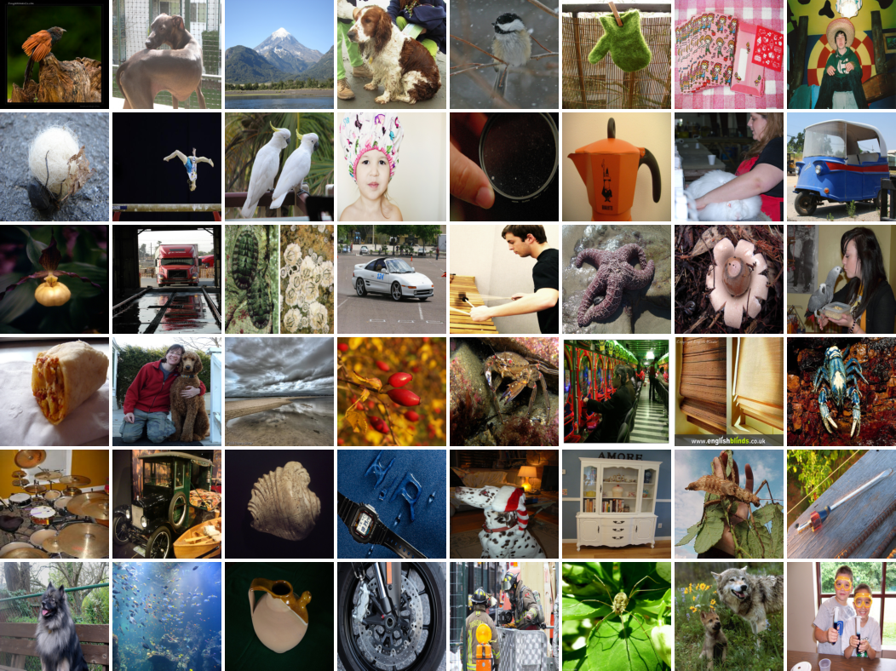
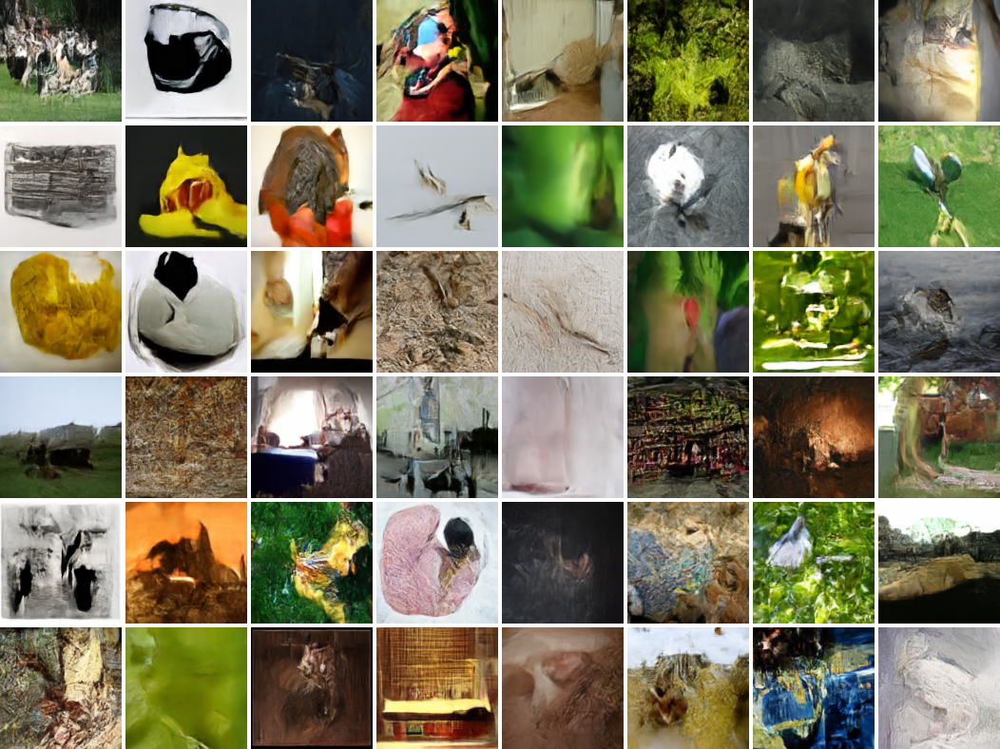
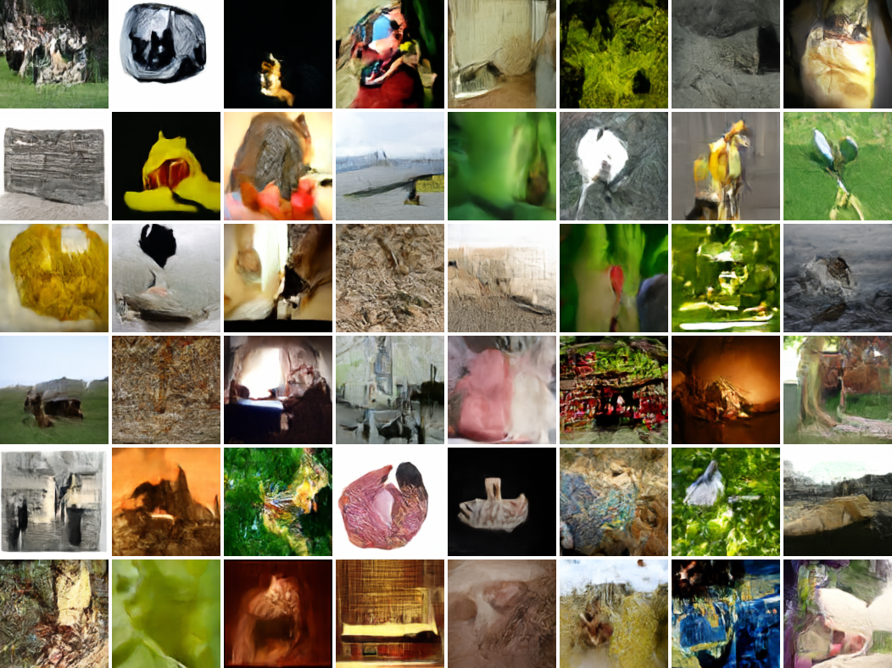
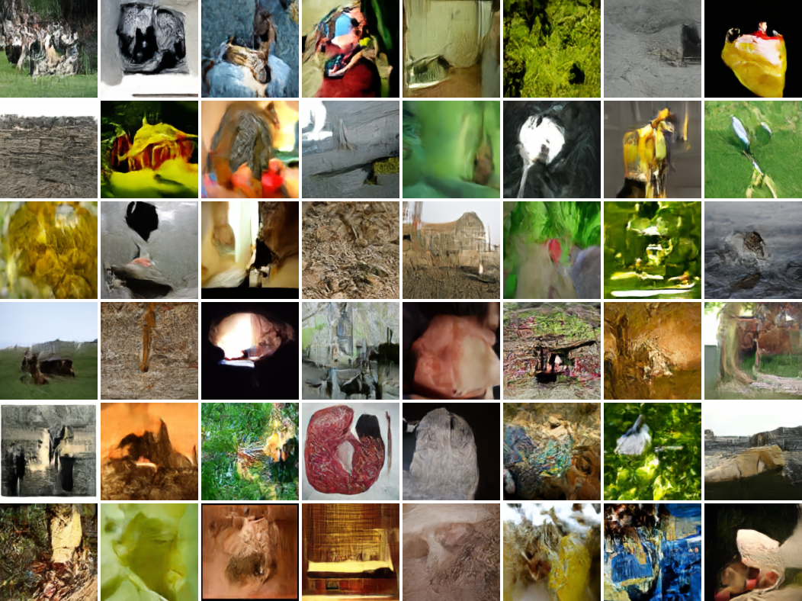

uniform run, step 685,000. Black and white pixels: plain sampler against the corrected samplers
Model: run unify-wclamp01-selfflow3to6-selfteach-xmot3-100m-from650k-uniform, EMA weights, step 685,000, 16 Euler steps.
Each sample grid shows the same 48 seeds in the same positions, so you can compare image by image.
The real grid shows 48 validation images. Long run, step 200,000 · step 350,000 · Back to train-viz
Flip in place
Press a button or the keys 1 to 5. The grid changes in the same position.

Scores
| Setting | FID | KID × 1000 | fd_ae_z | Spread between images | Black pixels | White pixels |
|---|---|---|---|---|---|---|
| Real images | 0.137 | 3.2% | 1.0% | |||
| Plain sampler | 86.47 | 39.8 | 348 | 0.246 | 18.9% | 8.3% |
| Spread capped at 0.137, from step 2 | 85.19 | 52.6 | 226 | 0.138 | 3.6% | 1.3% |
| Noise mean × 0.5 | 85.38 | 53.1 | 251 | 0.145 | 9.8% | 3.6% |
| Noise mean × 0 | 89.53 | 59.5 | 265 | 0.073 | 5.9% | 2.6% |
The scores come from 10,000 samples. Lower is better for FID, KID and fd_ae_z. "Spread between images" is the standard deviation of the mean brightness of the images. A black pixel is below 0.02. A white pixel is above 0.98.
All five grids



